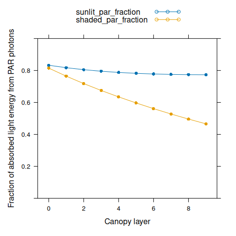
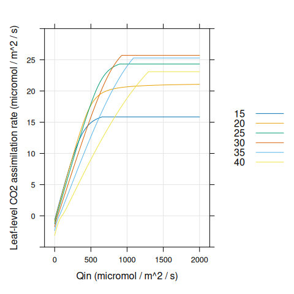
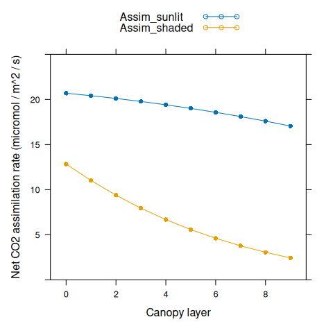
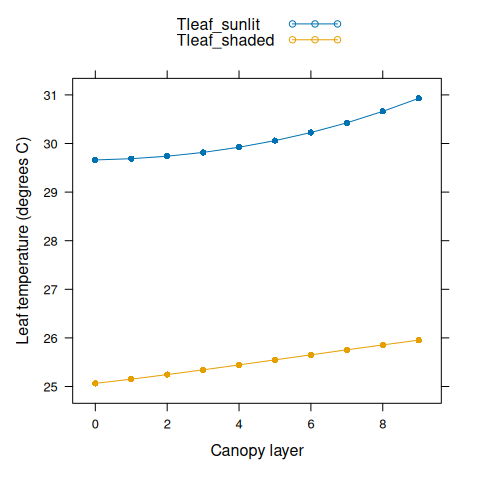

Canopy Photosynthesis Models
Source:vignettes/web_only/canopy_photosynthesis.Rmd
canopy_photosynthesis.Rmd1 A General Canopy Photosynthesis Model
At the leaf level, the net CO\(_2\) assimilation rate per unit leaf area (\(A_{n,leaf}\)) depends on the incident photosynthetically active photon flux density (PPFD; \(Q_{in}\)), the absorbed shortwave energy (\(I_{abs}\)), the ambient CO\(_2\) concentration outside the boundary layer (\(C_a\)), the air temperature (\(T_a\)), the relative humidity (\(h_a\)), and several other environmental factors. Mathematically, we can express this by writing \(A_n\) as a function of these variables: \(A_{n,leaf} = A_{n,leaf}(Q_{in}, I_{abs}, C_a, T_a, h_a)\). The exact equation used to calculate \(A_{n,leaf}\) will generally depend on individual choices for modelling photosynthetic biochemistry, stomatal response, and energy balance. For simplicity, we do not attempt to reproduce them here.
Each of these environmental variables may change throughout a crop canopy. A common way to treat this is to express each of them as a function of the cumulative leaf area index (cLAI; \(\ell\)). At the top of the canopy, \(\ell = 0\), and it increases to \(\ell = L\) at the bottom of the canopy, where \(L\) is the whole-canopy leaf area index (LAI). LAI itself is defined as the one-sided leaf area per unit ground area. It can be loosely interpreted as the number of leaf layers covering the ground. cLAI can then be interpreted as the LAI of leaves above a certain point in the canopy.
For a wide area of a crop that has achieved canopy closure, lateral position within the field is not expected to influence environmental conditions, leaving depth within the canopy as the main variable. Cumulative LAI is a way to express depth within the canopy using leaf area, since the amount of leaf area above a particular point is more important for determining \(Q_{in}\) (and the other variables) than the physical distance below the canopy top.
With this in mind, we can write \(A_{n,leaf} = A_{n,leaf}(Q_{in}(\ell), I_{abs}(\ell), C_a(\ell), T_a(\ell), h_a(\ell))\). This notation is a bit unweildy, and it can be made more compact by writing \(A_{n,leaf} = A_{n,leaf}(\ell)\). In this form, it is implied that each of the inputs to the photosynthesis model used to calculate \(A_{n,leaf}\) change with \(\ell\). This notation is convenient because it allows us to define the net CO\(_2\) assimilation rate per unit ground area (\(A_{n,canopy}\)) using a one-dimensional integral over \(\ell\):
\[\begin{equation} A_{n,canopy} = \int_{\ell = 0}^{L} A_{n,leaf}(\ell) d \ell, \tag{1.1} \end{equation}\]
where \(A_{n,leaf}(\ell)\) is the net CO\(_2\) assimilation rate (per leaf area) of an infinitesimally small piece of leaf located at a height within the canopy where the cLAI is \(\ell\), and \(d \ell\) is the change in cLAI associated with that piece. (\(d \ell\) can be thought of as \(L \cdot dS / S\), where \(dS\) is the area of the piece of leaf and \(S\) is the total leaf area of the canopy.)
Equation (1.1) is the most general way to express the relationship between leaf-level and canopy photosynthesis. From a biological point of view, it is equivalent to dividing the canopy into infinitely many layers, each of which is infinitesimally thin and contains an infinitesimally small amount of leaf area, and then adding the contribution of each thin layer together to get the whole canopy rate. The function \(A_{n,leaf}(\ell)\) represents the rate from such an infinitesimally thin leaf layer.
1.1 Examples
A canopy photosynthesis model is discussed in John H. M. Thornley and Johnson (1990) (see the section below). Although Thornley uses different notation and a simplistic model for photosynthesis, it is clear that his Equations 10.4a and 10.1b can be combined to express canopy photosynthesis (\(P\)) in a similar way to our Equation (1.1):
\[\begin{equation} P = \int_0^L P_1(l) dl. \end{equation}\]
Other examples can be found in journal articles, such as Equation 10 from Hirose and Werger (1987). When a simple model of photosynthesis is used, sometimes \(A_{n,leaf}(\ell)\) is explicitly written, as in Table I from J. Goudriaan (1986).
2 A Model with Shaded and Sunlit Leaves
Equation (1.1) is an oversimplified way to represent \(A_{n,canopy}\) because it ignores several other key variables that influence \(A_{n,leaf}\) besides \(\ell\). A common refinement of this model is to separately consider sunlit and shaded leaves. A major difference between these two leaf classes is the dependence of \(Q_{in}\) on \(\ell\). Sunlit leaves at any depth within the canopy all receive a very similar value of \(Q_{in}\), while shaded leaves generally receive less light deeper within the canopy. When sunlit and shaded leaves are treated separately, we can write
\[\begin{equation} A_{n,leaf}(\ell) = A_{n,leaf}^{sunlit}(\ell) \cdot f_{sunlit}(\ell) + A_{n,leaf}^{shaded}(\ell) \cdot f_{shaded}(\ell), \end{equation}\]
where \(A_{n,leaf}^{sunlit}(\ell)\) and \(A_{n,leaf}^{shaded}(\ell)\) are the leaf-level net CO\(_2\) assimilation rates per leaf area for sunlit and shaded leaves at cLAI \(\ell\), and \(f_{sunlit}(\ell)\) and \(f_{shaded}(\ell)\) are the fractions of sunlit and shaded leaf area at \(\ell\). (All leaves must be either sunlit or shaded, so \(f_{sunlit}(\ell) + f_{shaded}(\ell) = 1\).) With this new expression for leaf-level photosynthesis, Equation (1.1) can be modified to
\[\begin{equation} A_{n,canopy} = \int_{\ell = 0}^{L} \left[ A_{n,leaf}^{sunlit}(\ell)f_{sunlit}(\ell) + A_{n,leaf}^{shaded}(\ell)f_{shaded}(\ell) \right] d \ell. \tag{2.1} \end{equation}\]
3 A Multilayer Canopy Model
While Equations (1.1) and (2.1) are useful for defining \(A_{n,canopy}\), they have limited practical value since they do not have analytical solutions for detailed mechanistic models of leaf-level photosynthesis. As Thornley suggests, a numerical integration approach must be used to calculate canopy assimilation in this case. The simplest approach to numerical integration is to approximate the integral by a Riemann sum.
By dividing the cLAI interval \((0,L)\) into \(N\) subintervals of equal size and converting the integral to a Riemann sum, Equation (2.1) becomes
\[\begin{equation} A_{n,canopy} = \sum_{i = 0}^{N-1} \left[ A_{n,leaf}^{sunlit}(\ell_i)f_{sunlit}(\ell_i) + A_{n,leaf}^{shaded}(\ell_i)f_{shaded}(\ell_i) \right] \cdot \frac{L}{N}, \tag{3.1} \end{equation}\]
where \(\ell_i = (i + 0.5) \cdot L / N\) and \(L / N\) is the cLAI subinterval width. Here we have used the “midpoint rule” for the Riemann sum, but in principle the “left rule” or “right rule” could also be used.
From a biological perspective, this approach to numerical integration can be understood as dividing the crop canopy into \(N\) thick layers of equal amounts of leaf area. (Note that these layers are conceptually different than the infinitesimally thin layers discussed in connection with Equation (1.1).) Thus, Equation (3.1) is usually referred to as a “multilayer canopy model.” In this model, we assume that \(A_{n,leaf}^{sunlit}\) for all sunlit leaves in a thick layer can be reasonably approximated by \(A_{n,leaf}^{sunlit}\) calculated for an infinitely thin layer at the midpoint of that thick layer, and likewise for shaded leaves.
The accuracy of the multilayer canopy model expressed in Equation (3.1) will depend on how reasonable this assumption is. Generally, the model will be more accurate when larger \(N\) is used. As \(N\) becomes larger, the width of each thick layer becomes smaller, and so environmental conditions across each thick layer become more uniform. Of course, if \(N \rightarrow \infty\), the Riemann sum in Equation (3.1) converges back to the integral in Equation (2.1).
3.1 Examples
Examples of multilayer canopy models can be found in the literature; Bonan et al. (2021) contains references to many of them. Despite their prevalence, descriptions of these models rarely contain an explicit equation describing exactly how to relate canopy-level assimilation to leaf-level assimilation, as we have done with Equation (3.1).
For example, instead of providing an equation, Pury and Farquhar (1997) write “Canopy photosynthesis rate was calculated by the summation of the product of rate of leaf photosynthesis per unit leaf area by the leaf area in each class” (page 541).
3.2 Non-Multilayer Canopy Models
Note that if a different numerical integration technique such as Gaussian quadrature is used instead of a Riemann sum, the canopy might not be divided into layers; such a model would not be considered a multilayer canopy model because it would not be conceptually divided into distinct thick layers (J. Goudriaan 1986; Jan Goudriaan 2016).
4 BioCro’s Multilayer Canopy Model
In BioCro, we use the multilayer canopy model described in Chapter 15 of Campbell and Norman (1998). Example 15.2 in that book is especially useful for demonstrating how the model’s equations should be used. However, note that the example does not take a multilayer approach; instead, it only considers sunlit and shaded leaves. Thus, some aspects of the example do not directly apply for BioCro. For example, it is not necessary to calculate a weighted average of diffuse PAR across the canopy in BioCro’s model.
Here we summarize the main parts of the model as they are used in BioCro.
4.1 Sunlit and Shaded Fractions
Equation 15.22 of Campbell and Norman (1998) calculates the fraction of sunlit leaves:
\[\begin{equation} f_{sunlit}(\ell) = e^{-K_{direct} \cdot \ell}, \end{equation}\]
where \(K_{direct}\) is the canopy extinction coefficient for direct radiation. The shaded fraction is then given by \(f_{shaded}(\ell) = 1 - f_{sunlit}\). The extinction coefficient \(K_{direct}\) depends on the leaf angle distribution and the direction of incoming beam radiation (and hence the solar zenith angle). See Equation 15.4 for more details.
4.2 Incident Light
Within a canopy, several distinct types of light can be considered:
The beam flux just above the canopy \(Q_{ob}\)
The diffuse flux just above the canopy \(Q_{od}\)
The diffuse flux within the canopy \(Q_d\)
The down-scattered flux within the canopy \(Q_{sc}\)
The total beam flux (unintercepted beam and downscattered beam) within the canopy \(Q_{bt}\)
The unintercepted beam flux within the canopy \(Q_b\)
In general, there are broad distinctions between location (just above the canopy or within the canopy), type (beam flux or diffuse flux), and source (flux from the sky or flux that has been scattered by leaves in the canopy). Beam flux is typically expressed as flux density through a horizontal plane, while diffuse flux densities apply to any surface orientation because they are not directional. Some of these fluxes are related to each other. In particular, \(Q_{bt} = Q_{sc} + Q_b\) (Equation 15.20).
Shaded leaves receive diffuse radiation and down-scattered radiation. Sunlit leaves receive these types of radiation with the addition of direct beam radiation. Expressed on a leaf area basis, the flux density incident on sunlit and shaded leaves (\(Q_{in}^{sunlit}\) and \(Q_{in}^{shaded}\)) are
\[\begin{equation} Q_{in}^{sunlit} = K_{direct} \cdot Q_{ob} + Q_d + Q_{sc} \end{equation}\]
and
\[\begin{equation} Q_{in}^{shaded} = Q_d + Q_{sc} \end{equation}\]
(Equations 15.18 and 15.19). The term \(K_{direct} \cdot Q_{ob}\) is the average direct beam radiation accounting for the distribution of leaf angles.
Solar diffuse radiation originates in the sky due to atmospheric scattering of the sun’s light and changes within the canopy according to
\[\begin{equation} Q_d(\ell) = Q_{od} \cdot e^{- \sqrt{\alpha} \cdot K_{diffuse} \cdot \ell}, \end{equation}\]
where \(\alpha\) absorptivity of the leaves in the canopy and \(K_{diffuse}\) is the extinction coefficient for diffuse radiation (see Figure 15.4 and surrounding discussion). The factor \(\sqrt{\alpha}\) models the effect of light scattering and transmission by the leaves. This is Equation 15.17.
Additional diffuse radiation is caused by scattering and transmission of the direct beam by the leaves. It can be calculated as the difference between the total beam radiation and unintercepted beam radiation as follows:
\[\begin{equation} Q_{sc}(\ell) = Q_{bt}(\ell) - Q_b(\ell) \end{equation}\]
where
\[\begin{equation} Q_{bt}(\ell) = Q_{ob} \cdot e^{- \sqrt{\alpha} \cdot K_{direct} \cdot \ell} \end{equation}\]
and
\[\begin{equation} Q_b(\ell) = Q_{ob} \cdot e^{- K_{direct} \cdot \ell}. \end{equation}\]
These are Equations 15.20, 15.15, and 15.16.
4.3 Absorbed Shortwave Energy
Each leaf receives light spanning a wide range of wavelengths. Most light energy is found in the photosynthetically active radiation (PAR) and near-infrared (NIR) bands (400 - 700 nm and 700 - 2500 nm, respectively).
The incident light energy in the PAR band can be estimated from the incident PPFD by assuming a value for the average energy per PAR photon:
\[\begin{equation} I_{in}^{PAR} = Q_{in} \cdot E \end{equation}\]
where \(E\) is the average energy per PAR photon. Then the absorbed PAR energy can be found using the equation for absorption by a thin layer, which simply multiplies the incident radiation by the absorptivity:
\[\begin{equation} I_{abs}^{PAR} = \alpha_{PAR} \cdot I_{in}^{PAR} \end{equation}\]
where \(\alpha_{PAR} = 1 - T_{PAR} - R_{PAR}\) is the PAR absorptivity, and \(T_{PAR}\) and \(R_{PAR}\) are the leaf transmittance and reflectance in the PAR band, respectively.
In direct sunlight, the amount of energy in the NIR band can be estimated from \(I^{PAR}\) using a known fraction \(f_{PAR}\):
\[\begin{equation} I^{NIR} = I^{PAR} \cdot (1 - f_{PAR}) / f_{PAR} \tag{4.1} \end{equation}\]
where \(f_{PAR}\) is the fraction of shortwave energy in the PAR band. PAR and NIR light are reflected and transmitted differently by leaves in the canopy, so this fraction changes throughout the canopy. Rather than trying to predict \(f_{PAR}(\ell)\), we simply calculate \(I_{in}^{NIR}\) just above the canopy top using Equation (4.1), and then use the canopy light transmission functions described above to calculate \(I_{in}^{NIR}(\ell)\). Then, at each point in the canopy, the total absorbed shortwave energy can be calculated as
\[\begin{equation} I_{abs}^{shortwave} = \alpha_{PAR} \cdot I_{in}^{PAR} + \alpha_{NIR} \cdot I_{in}^{NIR} \end{equation}\]
5 BioCro Examples
BioCro’s ten layer canopy properties module can be used to calculate and plot several of the variables discussed above. We use a solar zenith angle of 40 degrees, total canopy LAI of 3, total incident PPFD of 2000 (with 80 percent in the beam) to match example 15.2 from the textbook. Other parameter values come from Soybean-BioCro.
library(BioCro)
library(lattice)
# Set inputs
zenith_angle <- 40 # degrees
LAI <- 3 # dimensionless
total_ppfd <- 2000 # micromol / m^2 / s
beam_fraction <- 0.8 # dimensionless
windspeed <- 2.0 # m / s
# Calculate total PAR energy just above the canopy
total_par <- total_ppfd * soybean$parameters$par_energy_content
# Run the ten-layer canopy properties module
canopy_properties <- evaluate_module(
'BioCro:ten_layer_canopy_properties',
within(soybean$parameters, {
cosine_zenith_angle = cos(zenith_angle * pi / 180)
lai = LAI
par_incident_diffuse = total_par * (1 - beam_fraction)
par_incident_direct = total_par * beam_fraction
windspeed = windspeed
})
)
# Make a helping function for extracting subsets of the results
canopy_profile <- function(basename, reslist) {
vnames <- grep(
paste0(basename, '_layer_[0-9]'),
names(reslist),
value = TRUE
)
as.numeric(reslist[vnames])
}
# Set the layer numbers
nlayer <- seq(0, 9)First we can plot the fractions of sunlit and shaded leaves.
# Plot sunlit and shaded fractions
f_sunlit <- canopy_profile('sunlit_fraction', canopy_properties)
f_shaded <- canopy_profile('shaded_fraction', canopy_properties)
xyplot(
f_sunlit + f_shaded ~ nlayer,
type = 'b',
pch = 16,
auto.key = list(space = 'top'),
xlab = 'Canopy layer',
ylab = 'Fraction of leaves',
ylim = c(0, 1)
)
Now we can plot incident PPFD for leaves within the canopy. Here Q_above is
the total incident PPFD just above the top of the canopy.
# Plot incident light levels
Q_sunlit <- canopy_profile('sunlit_incident_ppfd', canopy_properties)
Q_shaded <- canopy_profile('shaded_incident_ppfd', canopy_properties)
Q_above <- rep_len(total_ppfd, length(nlayer))
xyplot(
Q_sunlit + Q_shaded + Q_above ~ nlayer,
type = 'b',
pch = 16,
cex = c(1, 1, 0),
lty = c(1, 1, 2),
auto.key = list(space = 'top'),
xlab = 'Canopy layer',
ylab = 'Incident PPFD (micromol / m^2 / s)',
ylim = c(0, 2100)
)
We can also plot absorbed shortwave energy for leaves within the canopy.
# Plot absorbed shortwave energy
I_abs_sunlit <- canopy_profile('sunlit_absorbed_shortwave', canopy_properties)
I_abs_shaded <- canopy_profile('shaded_absorbed_shortwave', canopy_properties)
xyplot(
I_abs_sunlit + I_abs_shaded ~ nlayer,
type = 'b',
pch = 16,
auto.key = list(space = 'top'),
xlab = 'Canopy layer',
ylab = 'Absorbed shortwave energy (J / m^2 / s)',
ylim = c(0, 500)
)
We can also plot the fraction of absorbed shortwave energy in the PAR band through the canopy.
# Calculate absorptivity in the PAR band
absorptivity_par <- with(soybean$parameters, {1 - leaf_transmittance_par - leaf_reflectance_par})
# Calculate absorbed PAR energy
par_abs_sunlit <- Q_sunlit * soybean$parameters$par_energy_content * absorptivity_par
par_abs_shaded <- Q_shaded * soybean$parameters$par_energy_content * absorptivity_par
# Calculate the fraction of absorbed energy in the PAR band
sunlit_par_fraction <- par_abs_sunlit / I_abs_sunlit
shaded_par_fraction <- par_abs_shaded / I_abs_shaded
# Plot the fractions
xyplot(
sunlit_par_fraction + shaded_par_fraction ~ nlayer,
type = 'b',
pch = 16,
auto.key = list(space = 'top'),
xlab = 'Canopy layer',
ylab = 'Fraction of absorbed light energy from PAR photons',
ylim = c(0, 1)
)
Here we can see that although about half of solar light energy lies in the PAR band, sunlit leaves absorb more PAR energy than NIR energy. Deeper within the canopy, the fraction of absorbed light energy from PAR photons decreases. Shaded leaves deep within the canopy may absorb more NIR than PAR energy.
As light levels vary within the canopy, leaf-level assimilation rates will also vary. Here we can show this dependence by simulating light response curves at a few different temperatures.
# Simulate an A-Q curve
aq_curve <- module_response_curve(
'BioCro:c3_assimilation',
within(soybean$parameters, {
StomataWS = 1
gbw = 1.2
rh = 0.6
}),
within(
expand.grid(
Tleaf = seq(15, 40, by = 5),
Qabs = seq(0, total_ppfd * absorptivity_par, by = 5)
),
{temp = Tleaf}
)
)
# Include incident Q
aq_curve$Qin <- aq_curve$Qabs / absorptivity_par
# Plot it
xyplot(
Assim ~ Qin,
group = Tleaf,
data = aq_curve,
type = 'l',
auto.key = list(space = 'right'),
grid = TRUE,
xlab = 'Qin (micromol / m^2 / s)',
ylab = 'Leaf-level CO2 assimilation rate (micromol / m^2 / s)',
ylim = c(-5, 30)
)
Finally, we can see how assimilation rates change throughout the canopy. Here we will use an air temperature of 25 degrees C.
# Get boundary layer conductance
gbw_canopy <- evaluate_module(
'BioCro:canopy_gbw_thornley',
c(soybean$parameters, list(
canopy_height = LAI / soybean$parameters$heightf,
windspeed = windspeed
))
)$gbw_canopy
# Get absorbed longwave energy
air_temperature <- 25
absorbed_longwave <- evaluate_module(
'BioCro:stefan_boltzmann_longwave',
list(temp = air_temperature, emissivity_sky = soybean$parameters$emissivity_sky)
)$absorbed_longwave
# Calculate canopy assimilation rates
canopy_assimilation <- evaluate_module(
'BioCro:ten_layer_c3_canopy',
within(c(soybean$parameters, canopy_properties), {
StomataWS = 1
rh = 0.6
temp = air_temperature
gbw_canopy = gbw_canopy
absorbed_longwave = absorbed_longwave
})
)
# Plot canopy assimilation rates
Assim_sunlit <- canopy_profile('sunlit_Assim', canopy_assimilation)
Assim_shaded <- canopy_profile('shaded_Assim', canopy_assimilation)
xyplot(
Assim_sunlit + Assim_shaded ~ nlayer,
type = 'b',
pch = 16,
auto.key = list(space = 'top'),
xlab = 'Canopy layer',
ylab = 'Net CO2 assimilation rate (micromol / m^2 / s)',
ylim = c(0, 25)
)
The canopy assimilation module also calculates other outputs such as leaf temperature.
# Plot canopy leaf temperatures
Tleaf_sunlit <- canopy_profile('sunlit_leaf_temperature', canopy_assimilation)
Tleaf_shaded <- canopy_profile('shaded_leaf_temperature', canopy_assimilation)
xyplot(
Tleaf_sunlit + Tleaf_shaded ~ nlayer,
type = 'b',
pch = 16,
auto.key = list(space = 'top'),
xlab = 'Canopy layer',
ylab = 'Leaf temperature (degrees C)'
)
We can also see the total canopy assimilation rate (in units of micromol / m^2 / s):
canopy_totals <- evaluate_module(
'BioCro:ten_layer_canopy_integrator',
within(c(canopy_properties, canopy_assimilation), {
growth_respiration_fraction = 0
lai = LAI
})
)
canopy_totals$canopy_assimilation_molar_flux
#> [1] 35.28481Another potentially interesting output is the total PPFD absorbed by the canopy. We can check to make sure this is smaller than the incident PPFD just above the canopy. This is not calculated by BioCro, so we will have to calculate it here. We can define the total PPFD absorbed by the canopy to be
\[\begin{equation} Q_{abs,canopy} = \int_{\ell = 0}^{L} \left[ Q_{abs,sunlit}(\ell) \cdot f_{sunlit}(\ell) + Q_{abs,shaded}(\ell) \cdot f_{shaded}(\ell) \right] d \ell. \end{equation}\]
Taking a numeric approximation of the integral and using \(Q_{abs} = \alpha \cdot Q_{in}\), we can write the multilayer canopy version:
\[\begin{equation} Q_{abs,canopy} = \alpha \cdot \frac{L}{N} \cdot \sum_{i = 0}^{N - 1} \left[ Q_{in,sunlit}(\ell_i) \cdot f_{sunlit}(\ell_i) + Q_{in,shaded}(\ell_i) \cdot f_{shaded}(\ell_i) \right] \end{equation}\]
This can be done in R as follows:
Q_abs_canopy <-
absorptivity_par * (LAI / 10) *
sum(Q_sunlit * f_sunlit + Q_shaded * f_shaded)
Q_abs_canopy
#> [1] 1407.459
Q_abs_canopy / total_ppfd
#> [1] 0.70372946 Selected Passages from Thornley (1990)
Here we reproduce a few sections and equations from John H. M. Thornley and Johnson (1990) because this book is not available in electronic form.
Section 10.1.1 (Light interception and attenuation):
The light attenuation through canopies is described by Beer’s law, as discussed in Chapter 8. For monocultures this is (eqn (8.1a))
\(\qquad I(l) = I_0 e^{-kl}\), \(\qquad\) (10.1a)
where \(I_0\) and \(I(l)\) W (m\(^2\) ground)\(^{-1}\) of photosynthetically active radiation (PAR) are the irradiances per unit horizontal area above and within the canopy respectively at cumulative leaf area index \(l\) and \(k\) is the extinction coefficient. The irradiance incident on the surface of a leaf within the canopy at depth \(l\) is
\(\qquad I_1(l) = \frac{k}{1 - m}I(l)\) W (m\(^2\) leaf)\(^{-1}\), \(\qquad\) (10.1b)
where \(m\) is the leaf transmission coefficient.
Section 10.1.2 (Single-leaf photosynthesis):
Throughout the analysis, the term photosynthesis is taken to be single-leaf gross photosynthesis minus photorespiration and is defined by eqn (9.10i):
\(\qquad P_1(I_1) = \frac{1}{2 \theta} \left\{ \alpha I_1 + P_m - \left[(\alpha I_1 + P_m)^2 - 4 \theta \alpha I_1 P_m \right]^{1/2} \right\}\), \(\qquad\) (10.2a)
with units kg CO\(_2\) (m\(^2\) leaf)\(^{-1}\) s\(^{-1}\). \(\alpha\) is the photochemical efficiency, with units kg CO\(_2\) J\(^{-1}\), \(P_m\) is the asymptotic value of \(P_1\) at saturating irradiance, and \(\theta\) is a dimensionless parameter (\(0 \leq \theta \leq 1\)). (Note that the notation used here is slightly different to that used in Chapter 9 in that the subscript 1 is used to denote single leaf photosynthesis.)
Section 10.2.1 (Instantaneous canopy photosynthesis):
The instantaneous rate of canopy photosynthesis is, in general, given by
\(\qquad P = \int_0^L P_1(I_1) dl\), \(\qquad\) (10.4a)
with units kg CO\(_2\) (m\(^2\) ground)\(^{-1}\) s\(^{-1}\), where \(l\) is the cumulative leaf area index and \(L\) is the total leaf area index.
Section 10.5 (Discussion):
There will, of course, be situations where the level of approximation at the leaf photosynthesis level, or the description of light interception, is oversimplified. For example, we have not included the possibility of diurnal variation in the stomatal conductance (in response to factors such as leaf water potential or carbohydrate content) which may affect the rate of leaf photosynthesis. In such cases it will be necessary [to] use the general concepts developed here and evaluate the integrals - either through the depth of the canopy or throughout the day - numerically.